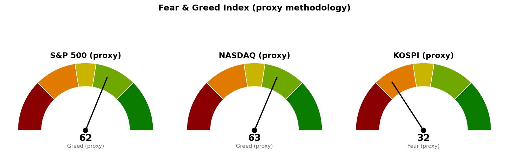

미국 지수·섹터·금리·변동성지수는 9월 11일(금) 정규장 확정 종가입니다. 브렌트유·WTI는 주말을 지나 재개된 9월 13일자 선물 시세라 뉴욕 주식 마감과 시점이 다릅니다. 코스피와 니케이 225는 9월 14일(월) 한국시간 12시 기준 장중 수치이며, 오늘 종가는 아직 확정되지 않았습니다.
직전 브리핑은 9월 11일 뉴욕 정규장 개장 2시간 시점의 장중 수치로 썼고, 오늘은 같은 날의 확정 종가로 채점합니다.
| 직전에 건 조건 | 판정 | 근거 (9월 11일 확정 종가) |
|---|---|---|
| 종가로 7,668.25 회복 그리고 30년 금리 5.286% 아래 → 경고 해제 | 미충족 | S&P 500 종가 7,656.98로 조건선 11.27포인트 아래 마감. 30년 금리도 5.354%로 조건선 위 |
| 7,580.06 아래에서 정규장 마감 → 보유분 축소 검토 | 미충족 | 9월 11일 저가 7,636.75로 조건선 위. 아직 진행 중입니다 |
| 브렌트유가 107.63달러 위로 복귀 → 상승 전제 소멸 | 거의 충족 | 9월 13일 브렌트유 107.44달러로 조건선 0.19달러 아래까지 복귀 |
| 브렌트유가 104.69달러 아래를 지키는지 | 지키지 못함 | 104.61달러에서 +2.71% 올라 107.44달러 |
| 9월 16일 FOMC까지 30년 금리 5.286% 아래로 오는지 | 진행 중 | 5.354%. 조건선까지 0.068%포인트 남았습니다 |
직전 판단 중 틀린 대목을 먼저 적습니다. 직전 브리핑은 장중 10년 금리 4.938%(-0.12%)를 근거로 "발표 직후 금리 상승분이 되돌려졌다"고 적었습니다. 확정 종가는 4.975%(+0.63%)로 올라서 끝났습니다. 장중 고가 4.985% 부근에서 되밀린 것이 아니라 그 근처를 지킨 채 마감한 것이며, 물가 지표 이후 채권시장의 반응을 완화로 읽은 부분은 틀렸습니다. 30년만 5.361%에서 5.354%로 0.007%포인트 내렸습니다.
같은 이유로 직전 브리핑이 적은 코스피 9월 11일 종가 6,919.23도 정정합니다. 당시 확정 종가를 받지 못해 시간별 자료의 마지막 체결가로 채운 값이었고, 확정 종가는 6,909.91입니다.
직전 계획은 살아 있습니다. 경고 해제 조건 두 개가 모두 미충족이고 악화 조건도 건드리지 않았으므로, 기준선 7,668.25와 축소 검토선 7,580.06을 그대로 둡니다. S&P 500 20일선 자체는 7,668.25에서 7,666.66으로 1.59포인트(하루 평균 변동폭의 0.03배) 내려왔지만, 이 정도 이동으로 기준선을 새로 그리면 매일 조금씩 다른 숫자가 나오게 되므로 옮기지 않습니다.
| 줄 | 내용 |
|---|---|
| 현재 위치 | 6,755.02 (9/14 12시 장중, 전일 종가 6,909.91 대비 -2.22%). 20일선(최근 20일 평균 가격선, 최근 가격에 더 무게를 두는 지수이동평균) 6,815.35보다 60.33포인트(하루 평균 변동폭의 0.22배) 아래, 50일선 6,900.55보다 145.53포인트(0.53배) 아래. 상대강도지수(최근 14일 동안 오른 폭과 내린 폭의 비율을 0~100으로 나타낸 값) 48.4 |
| 기준선 | 6,815.35 (20일선) — 일봉 종가로 위에서 마쳐야 인정합니다. 장중에 넘는 것은 판정이 아닙니다 |
| 지키면 | 7,024.98. 5월 20일부터 9월 10일까지 6회 반응한 가격대이며 지지에서 저항으로 역할이 바뀐 자리입니다. 그 바로 위 7,038.00은 40일 박스 상단 7,128.09까지 이어지는 가장 두꺼운 반응 구간입니다 |
| 못 지키면 | 6,662.40. 3월 31일 저점에서 6월 19일 고점까지 상승분의 61.8%를 반납하는 자리(6,701.86)와 주봉 38.2% 되돌림, 6,600 단위 가격이 겹칩니다. 현재가에서 92.62포인트(0.34배) 아래이고, 오늘 장중 저가 6,654.82로 이미 이 가격대 안에 들어왔습니다 |
| 매수 사다리 | 1차 6,662.40 계좌의 5%, 2차 6,408.94 계좌의 5%. 취소선 6,024.13(40일 박스 하단) — 일봉 종가로 잃으면 남은 회차를 집행하지 않습니다 |
| 예상 기간 | 기준선까지 0.22일치 변동폭, 도착지 7,024.98까지 0.98일치입니다. 되돌림 없이 한 방향으로 갈 때의 최단이 2 거래일이며, 그 이상은 근거를 댈 수 없어 상한을 적지 않습니다 |
2차 6,408.94는 2월 27일부터 9월 3일까지 5회 반응하며 저항에서 지지로 바뀐 가격대이고, 9월 3일 저점 6,439.49가 그 위에 붙어 있습니다. 취소선까지 전부 물리면 1차는 -9.58%, 2차는 -6.00%가 되어 계좌 대비 -0.78% 손실입니다.
코스피 기준선은 미국 지수 기준선과 다른 방향을 가리킵니다. 나스닥은 20일선 위에서 마쳤는데 코스피는 20일선 아래에서 오늘 -2.22%를 보이고 있습니다. 코스피의 다음 세션 시가는 오늘 밤 뉴욕장 결과에 크게 좌우되므로, 이 계획은 미국장 결과에 선행 종속됩니다. 코스피 단독 신호만으로 사다리를 앞당기지 마십시오.
| 줄 | 내용 |
|---|---|
| 현재 위치 | 26,333.04 (9/11 종가, +0.96%). 20일선 26,277.48보다 55.56포인트(하루 평균 변동폭의 0.18배) 위, 50일선 26,087.05보다 245.99포인트(0.81배) 위. 상대강도지수 51.8 |
| 기준선 | 26,270.81 — 20일선(26,277.48)과 5월 11일부터 9월 11일까지 8회 반응한 가격대(26,288.95), 26,200 단위 가격이 겹치는 자리입니다. 일봉 종가로 위에서 마쳐야 유지로 봅니다 |
| 지키면 | 26,679.89. 8월 5일 고점 26,739.00과 26,600 단위 가격이 겹칩니다. 현재가에서 346.85포인트(1.14배) 위이고, 그 위는 26,821.38과 90일 박스 상단 26,951.45입니다 |
| 못 지키면 | 25,997.79. 5월 7일부터 9월 10일까지 7회 반응하며 저항에서 지지로 바뀐 가격대에 9월 1일 저점 25,995.53과 50일선 26,087.05가 겹치는, 아래쪽에서 가장 두꺼운 구간입니다. 현재가에서 335.25포인트(1.10배) 아래입니다 |
| 매수 사다리 | 1차 25,997.79 계좌의 5%, 2차 25,855.41 계좌의 5%. 취소선 25,526.46(7월 8일 저점) — 일봉 종가로 잃으면 남은 회차를 집행하지 않습니다 |
| 예상 기간 | 도착지까지 1.14일치, 다음 지지까지 1.10일치 변동폭입니다. 어느 쪽이든 되돌림 없이 진행할 때의 최단이 2 거래일입니다 |
2차 25,855.41은 8월 24일 저점 25,910.82와 25,800 단위 가격이 겹치는 자리입니다. 취소선까지 전부 물리면 1차는 -1.81%, 2차는 -1.27%가 되어 계좌 대비 -0.15% 손실입니다. 코스피 사다리보다 손실이 작은 것은 취소선이 회차 가격에 가깝기 때문이며, 그만큼 취소선에 닿기도 쉽습니다.
| 줄 | 내용 |
|---|---|
| 현재 위치 | 7,656.98 (9/11 종가, +0.86%, 고가 7,677.02 · 저가 7,636.75). 20일선 7,666.66보다 9.68포인트(하루 평균 변동폭의 0.16배) 아래, 50일선 7,602.61보다 54.37포인트(0.87배) 위. 상대강도지수 50.0 |
| 기준선 | 7,668.25 — 직전 브리핑이 건 값을 그대로 씁니다. 정규장 종가로 위에서 마쳐야 하며, 장중에 넘는 것은 판정이 아닙니다 |
| 지키면 | 7,801.08. 8월 5일 고점 7,793.68과 8월 13일 고점 7,816.70, 90일 박스 상단 7,793.95, 7,800 단위 가격이 겹칩니다. 현재가에서 144.10포인트(2.31배) 위입니다 |
| 못 지키면 | 7,598.83. 50일선 7,602.61과 9월 1일 저점 7,611.20, 7월 15일 고점 7,581.50, 7,600 단위 가격이 겹칩니다. 현재가에서 58.15포인트(0.93배) 아래이며, 그 아래 7,580.06이 보유분 축소 검토선입니다 |
| 매수 사다리 | 이번 브리핑은 S&P 500에 매수 사다리를 내지 않습니다. 아래 설명 참조 |
| 예상 기간 | 기준선까지 0.18일치, 도착지까지 2.31일치, 다음 지지까지 0.93일치 변동폭입니다 |
사다리를 내지 않는 이유는 취소선을 놓을 자리가 없어서입니다. 아래쪽 첫 지지 겹침 구간 7,598.83과 직전이 건 보유분 축소 검토선 7,580.06 사이가 18.77포인트, 하루 평균 변동폭의 0.30배뿐입니다. 1차를 사는 가격과 보유분을 줄이라는 신호가 나오는 가격이 같은 구간 안에 들어가므로, 그 사이에 취소선을 둘 수 없습니다. 그 아래 7,565.18(5월 28일~9월 10일 5회 반응, 7,550 단위 가격)까지 내려가서야 다음 자리가 나오는데, 거기까지 가려면 7,580.06을 이미 종가로 잃은 뒤입니다. 같은 가격대에서 사면서 파는 계획은 내지 않습니다.
S&P 500 노출은 나스닥 사다리로 갈음하십시오. 두 지수는 9월 11일 각각 +0.86%와 +0.96%로 방향이 같습니다.
세 지수 모두 9월 16일 FOMC 결과를 확인하기 전에는 어떤 회차도 집행하지 않습니다. 코스피 1차 가격은 오늘 장중 저가 6,654.82로 이미 도달했으나, 이번 회차는 9월 17일 이후 다시 이 가격에 닿을 때부터 유효합니다. 두 사다리를 모두 채우고 취소선까지 전부 물리면 계좌 대비 합계 -0.93%입니다.
| 지수 | 종가/현재 | 등락 | 고가 | 저가 |
|---|---|---|---|---|
| S&P 500 (9/11 종가) | 7,656.98 | +0.86% | 7,677.02 | 7,636.75 |
| 나스닥 종합 (9/11 종가) | 26,333.04 | +0.96% | 26,431.22 | 26,283.11 |
| 코스피 (9/14 장중) | 6,756.33 | -2.22% | 6,771.70 | 6,654.82 |
| 니케이 225 (9/14 장중) | 63,498.61 | -0.80% | 63,691.53 | 62,726.18 |
미국 두 지수는 물가 발표일에 올라 마쳤지만, S&P 500 종가 7,656.98은 장중 고가 7,677.02에서 20.04포인트를 반납한 값이고 20일선 아래입니다. 직전 브리핑이 장중에 본 7,672.39는 지켜지지 않았습니다.
코스피는 미국장의 상승을 받지 못하고 오늘 -2.22%로 열렸습니다. 시가 6,692.61이 이미 전일 종가보다 217.30포인트 아래였고, 저가 6,654.82에서 올라와 12시 기준 6,756.33입니다. 40일 박스는 6,024.13~7,128.09로 폭이 하루 평균 변동폭의 4.03배입니다. 직전 40일 구간(7,737.73~9,159.61)에서 아래로 내려와 이 박스에 들어온 상태라, 이 안에서 매물을 소화하고 다시 올라가는 국면인지 한 번 더 내려가기 전의 쉬어 가는 국면인지는 아직 판정되지 않았습니다. 니케이 225도 -0.80%로 같은 방향입니다.
미국 업종 상대강도(SPDR 업종 ETF 기준, 9월 11일 종가):
| 주도 | 등락 | 부진 | 등락 | |
|---|---|---|---|---|
| 기술 (XLK) | +1.32% | 유틸리티 (XLU) | -0.31% | |
| 산업재 (XLI) | +1.07% | 헬스케어 (XLV) | -0.18% | |
| 커뮤니케이션 (XLC) | +0.99% | 에너지 (XLE) | +0.32% |
11개 업종 중 9개가 올랐고, 내린 둘은 유틸리티와 헬스케어로 모두 방어 성격입니다. 임의소비재(XLY) +0.89%, 부동산(XLRE) +0.86%, 금융(XLF) +0.67%, 소재(XLB) +0.37%, 필수소비재(XLP) +0.35%로 중간 구간도 상승입니다.
에너지 +0.32%는 9월 11일 유가 되밀림을 반영한 값입니다. 그 뒤 브렌트유가 +2.71% 올라 107.44달러로 돌아왔으므로, 이 업종 순위는 다음 세션에 바뀔 수 있습니다. 업종 상대강도는 미국 ETF 기준으로만 제공되며 한국·일본은 지수 등락만 있습니다.
| 항목 | 최근값 | 직전 종가 | 등락 | 기준 시점 |
|---|---|---|---|---|
| 미 30년 국채 금리 | 5.354% | 5.361% | -0.13% | 9/11 종가 |
| 미 10년 국채 금리 | 4.975% | 4.944% | +0.63% | 9/11 종가 |
| 브렌트유 | 107.44달러 | 104.61달러 | +2.71% | 9/13 선물 |
| WTI | 102.86달러 | 100.05달러 | +2.81% | 9/13 선물 |
| 변동성지수 (VIX) | 15.84 | 17.84 | -11.21% | 9/11 종가 |
물가 발표일에 주식과 채권금리가 같이 올랐습니다. 10년 금리 4.975%는 5.000%까지 0.025%포인트를 남긴 값이고, 30년은 5.354%로 경고 해제 조건선 5.286%보다 0.068%포인트 높습니다. 변동성지수는 15.84로 -11.21% 내렸는데, 금리가 오르는 가운데 나온 변동성 축소라 FOMC 결과에 되돌려질 여지가 있습니다.
유가는 주말 사이 되돌아왔습니다. 브렌트유 107.44달러는 직전 브리핑이 "여기로 복귀하면 9월 11일 상승의 전제가 사라진다"고 적은 107.63달러에서 0.19달러 아래입니다. 9월 11일 주식 상승을 설명하던 유가 되밀림은 이틀 만에 사라졌습니다.
1. 10년 금리가 5%에 근접 — 채권시장이 금리 인상을 요구하고 있다는 해석 (CNBC·MarketWatch, 9월 13~14일) 10년 금리가 2023년 10월 이후 처음으로 5%에 근접했고, 여기까지 올라온 경로가 수치 자체보다 중요하다는 분석입니다. 물가 기대가 밀어 올린 것이면 주식 배수에 직접 부담이 되고, 성장 기대가 밀어 올린 것이면 덜합니다. 확정 종가 4.975%는 이번 브리핑이 경고를 유지하는 근거이며, 9월 16일 FOMC에서 어느 쪽인지가 확인됩니다.
2. 이번 주 FOMC 회의 (CNBC, 9월 13일) 9월 16일 금리 결정이 이번 주 시장의 중심이라는 내용입니다. 우리 쪽 일정 자료에도 향후 5일 안의 이벤트는 9월 16일 FOMC와 9월 17일 주간 실업수당 청구 둘뿐입니다. 이 결정 하나가 세 지수의 기준선과 사다리 가격을 동시에 바꾸므로, 사다리 회차를 FOMC 이후로 미뤘습니다.
3. 트럼프 대통령, 이란산 원유 관련 발언 — 걸프·이란 호르무즈 협상 교착 (CNBC, 9월 14일) 호르무즈 관련 협상이 진전되지 않는 가운데 나온 발언이며, 브렌트유가 104.61달러에서 107.44달러로 +2.71% 오른 배경입니다. 유가가 오르면 물가를 통해 장기금리를 다시 밀어 올리므로, 경고 해제 조건인 30년 금리 5.286%가 더 멀어집니다. 9월 11일 상승을 설명하던 조건이 사라진 상태로 FOMC에 들어가게 됩니다.
| 지수 | 점수 | 구간 | 직전(9/11) |
|---|---|---|---|
| S&P 500 | 62.3 | 탐욕 | 62.4 |
| 나스닥 | 62.7 | 탐욕 | 63.1 |
| 코스피 | 31.7 | 공포 | 50.3 |

미국 두 지수는 직전과 거의 같습니다(S&P 500 -0.1점, 나스닥 -0.4점). 두 지수 모두 변동성 항목이 80.5로 가장 높고 상대강도 항목은 50.0·51.8로 중립이라, 탐욕 구간 점수의 대부분은 변동성지수 15.84가 만든 것입니다. 금리가 오르는 가운데 나온 낮은 변동성이므로 이 점수를 상승 근거로 쓰지 마십시오.
코스피는 50.3에서 31.7로 18.6점 내려 공포 구간에 들어왔습니다. 모멘텀 39.7, 안전자산 선호 40.4가 같이 내렸습니다.
| 날짜 (한국시간) | 이벤트 | 확인할 것 |
|---|---|---|
| 9월 14일 15:30 | 코스피 마감 | 6,662.40 아래에서 마치는지 (장중 저가 6,654.82) |
| 9월 15일 05:00 | 뉴욕 정규장 마감 (미국 9/14) | S&P 500이 7,668.25 위에서 마치는지 |
| 9월 16일 | FOMC 금리 결정 | 30년 금리가 5.286% 아래로 오는지, 10년이 5.000%를 넘는지 |
| 9월 17일 | 주간 신규 실업수당 청구 | 고용 둔화가 금리 부담을 상쇄하는지 |
장부에 기록된 보유는 15개 종목입니다. 오늘 점검에서 조치가 필요한 종목은 하나이며, 7개는 아직 분석한 적이 없어 판정 자체가 불가능했습니다.
1. 신규 위험자산 편입 중단을 유지합니다. 경고 해제 조건 두 개 중 어느 것도 충족되지 않았고, 금리는 10년 4.975%로 오히려 올랐습니다. 현재가 부근에서 지수든 종목이든 새로 담지 마십시오. 2. SK하이닉스 (000660.KS) 추가 매수 조건은 충족됐습니다 — 이 한 건은 집행합니다. 9월 14일 장중 저가 1,695,000원으로 리포트가 건 되돌림 진입 가격 1,707,740원에 닿았습니다. 보유 2주·평단 2,132,667원·평가 -18.7%(-799,334원)이며, 수량과 손절은 그 종목 리포트가 정한 값을 그대로 쓰십시오. 지수 경고가 유지되는 동안 계좌 전체의 신규 편입은 이 한 건으로 제한합니다. 3. 매수 사다리는 걸어 두되 9월 17일 이후 도달분부터 집행합니다. 코스피 1차 6,662.40 계좌의 5%, 2차 6,408.94 계좌의 5%, 취소선 6,024.13. 나스닥 1차 25,997.79 계좌의 5%, 2차 25,855.41 계좌의 5%, 취소선 25,526.46. 모두 일봉 종가로 판정합니다. S&P 500에는 이번에 사다리를 내지 않습니다. 4. 보유분은 유지하되 S&P 500 7,580.06을 판정선으로 둡니다. 이 가격 아래에서 정규장을 마치면 그때 보유분 축소를 검토하십시오. 장중 이탈만으로는 조치하지 않습니다. 5. 삼성전자 (005930.KS)·LS ELECTRIC (010120.KS)·Fluence Energy (FLNC)·LightPath (LPTH)는 각자의 기준 가격까지 하루 평균 변동폭의 절반도 남지 않았습니다. 각각 집행 손절까지 0.47배, 경고 단계 이탈선까지 0.27배, 폐기선까지 0.02배, 아래쪽 진입 후보까지 0.01배입니다. 오늘 밤 미국장과 내일 코스피에서 판정이 날 수 있으므로 각 종목 리포트가 정한 조치를 그대로 따르십시오. 6. 삼성물산 (028260.KS)·SOL AI반도체TOP2플러스 (0167A0.KS)·TIGER 코리아AI전력기기TOP3플러스 (0117V0.KS)·SOL 반도체전공정 (475300.KS)·TIGER 미국배당다우존스 (458730.KS)·Alibaba (BABA)·MP Materials (MP)는 판정할 기준 가격이 없습니다. 리포트가 없어 손절선도 목표도 등록돼 있지 않은 상태이며, 합쳐서 계좌의 적지 않은 부분입니다. 이 종목들은 오늘 배치의 분석 대상에 올라 있으니 리포트가 나오기 전까지는 추가 매수도 정리도 하지 마십시오.
다음 세션에 볼 것 하나 — 오늘 밤 뉴욕 정규장에서 S&P 500이 7,668.25 위에서 마치는지입니다. 넘으면 경고 해제 조건 두 개 중 하나가 채워지고 남은 것은 9월 16일 FOMC의 금리뿐이며, 못 넘으면 다음 지지 7,598.83까지 58.15포인트 사이에 받칠 가격이 없습니다.
이 문서는 참고 정보이며 투자자문이 아닙니다. 모든 수치는 위에 적은 기준 시각의 시장 자료에서 가져온 것이고, 투자 판단과 그 결과에 대한 책임은 투자자 본인에게 있습니다.